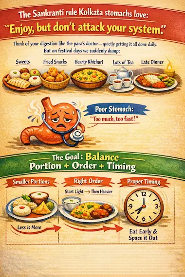
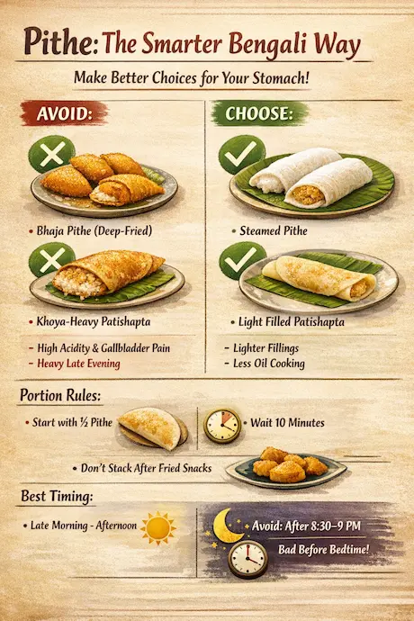

In Kolkata, Makar Sankranti doesn’t feel like a “festival day” only—it feels like a winter emotion .
But if you’ve ever had night acidity, burning chest, sour burps, or that sharp right-side upper belly pain after fried snacks—Sankranti can feel like a tug-of-war between joy and discomfort.
This blog is for Kolkata families who want festival food with peace—not fear. You don’t need to “avoid everything.” You just need a smart plate, the right timing, and a little GI wisdom.
Why Sankranti foods trigger acidity and gallbladder pain (simple Kolkata explanation)

1) Acidity (GERD) gets triggered by:
- Deep-fried + spicy snacks (telebhaja, chops, singara)
- Large meals (overfilling the stomach increases reflux)
- Late eating + lying down early (winter blanket life!)
- Extra tea/coffee after evening adda
2) Gallbladder pain (especially gallstones) is often triggered by:
- Fatty, fried foods (oil + ghee makes the gallbladder squeeze harder)
- Heavy, greasy meals all at once
- Sudden “festival binge” after light eating all day
If you already have gallstones, the gallbladder can protest after a greasy meal with right upper abdominal pain, nausea, bloating, or pain that travels to the back/right shoulder.
The Sankranti rule Kolkata stomachs love: “Enjoy, but don’t attack your system”
Think of your digestion like a quiet, hardworking para’s doctor—it manages everything daily. On festival days we suddenly dump:
- sweets,
- fried snacks,
- heavy khichuri,
- plus tea,
- plus late dinner.
So the goal is balance: portion + order + timing.
Your Sankranti Eating Plan
✅ Before you start (the 10-minute protection ritual)
Do this before pithe or fried snacks:
- 1 glass warm water (not boiling)
- If you tolerate it: a small banana or a small bowl of curd (plain)
- Then eat festival items.
This “base layer” helps reduce acid irritation and slows binge eating.
1) Til–Gur (sesame + jaggery): how to eat without acidity spikes
Til–gur is healthy—but for acidity-prone people, jaggery can feel “heavy,” and sesame can be dense.
Best tips:
- Eat small portion (2–3 small bites, not a big serving)
- Prefer after lunch, not late evening
- Avoid on an empty stomach if you have GERD
- Don’t combine with tea/coffee immediately—keep a 45–60 min gap
If you have gallstones: til–gur is usually okay in small amounts, but don’t combine it with fried snacks + heavy khichuri in the same sitting.
2) Pithe (especially fried/khoya-heavy): the smarter Bengali way

Pithe is love. But certain types are tougher on the stomach:
- Bhaja pithe / deep-fried pithe → high trigger for both acidity and gallbladder pain
- Dudher pithe / patishapta with heavy filling → can be heavy late evening
Choose better options (still tasty):
- Prefer steam-based pithe or less-oil pan-cooked versions
- Keep fillings lighter (less khoya, less coconut-ghee)
Portion rules that work:
- Start with ½ pithe, wait 10 minutes, then decide
- Don’t stack pithe after a fried snack plate
Timing tip:
- Best window: late morning to afternoon
- Worst window: after 8:30–9 pm, especially if you sleep by 11
3) Khichuri (bhog-style): the “comfort food” that becomes heavy
Kolkata winter + khichuri + begun bhaja = pure happiness. But a very oily, ghee-heavy khichuri can:
- worsen reflux (heavy meal pressure)
- trigger gallbladder contractions
Eat khichuri like a GI-friendly Bengali:
- Keep the plate: khichuri 60% + vegetables 40%
- Choose one fried side, not many (e.g., only begun bhaja OR only papad)
- Add a little plain curd if you tolerate dairy (cooling effect for reflux)
If you have gallbladder stones:
- Avoid ghee overload
- Skip “double fried” combinations (khichuri + begun bhaja + aloor chop)
4) Fried snacks (telebhaja, chops, singara): how to enjoy without pain
Let’s be honest—Kolkata fried snacks are emotion. But for GERD and gallbladder issues, deep-fried foods are the most common triggers.
Safe enjoyment rules:
- Eat slowly (10–12 bites, not 2 minutes)
- Choose one snack item, not a mixed plate
- Avoid very spicy chutney if reflux is active
- Don’t drink cold water immediately after (can worsen bloating)
Best pairings:
- Fried snack + warm water
- Fried snack + small plain curd bowl (if suits you)
Avoid:
- Fried snack + tea + sweet = triple trigger combo
The Kolkata Winter Timing Chart (this alone reduces acidity a lot)
To prevent night acidity:
- Finish your last heavy food at least 3 hours before sleep.
Examples:
- Sleep 10:30 pm → finish dinner by 7:30 pm
- Sleep 11:00 pm → finish dinner by 8:00 pm
- Sleep 11:30 pm → finish dinner by 8:30 pm
If your Sankranti plan includes snacks at night, keep it light: warm water + a small portion, and avoid lying down right after.
“Bengali Adda” habits that silently worsen acidity
These are very Kolkata-specific:
- Extra tea after 7 pm
- Long sofa/blanket sitting right after dinner
- Late-night “just one more” pithe
GI-friendly swaps:
- Replace late tea with warm water or light herbal tea (non-caffeinated)
- Do a 10-minute slow walk after dinner (even inside the house)
- Sit upright for 45–60 minutes after eating
If you already have gallstones: a special Sankranti caution
You don’t need panic. But if you have known gallstones or repeated gallbladder pain:
- Keep meals small and low-fat
- Avoid deep-fried + ghee-heavy foods on the same day
- Don’t fast all day and then binge at night (big trigger)
Red-flag symptoms (don’t ignore):
- Strong right upper belly pain lasting > 1–2 hours
- Fever, vomiting, yellow eyes/skin
- Severe pain after oily food repeatedly
These need medical evaluation—not home trials.
Where GI healthcare comes
A good GI system isn’t only for emergencies. Think of it like a “digestive safety net”:
- If you get frequent acidity, you may need a GERD plan (diet + timing + proper meds when necessary)
- If you get repeated right-side upper pain, you may need gallbladder evaluation (ultrasound is simple)
- If you have bloating + gas + discomfort often, you may need targeted guidance (not random antacids)
If you’re building a GI-focused healthcare journey in Kolkata, it helps to consult a GI–HPB team (gastro + hepatobiliary/surgery) so reflux, gallbladder, liver, and pancreas issues are handled in one connected approach—exactly how the body works.
Sankranti doesn’t need to hurt
Kolkata festivals are meant to feel like warmth—kites above, gur in the air, and family at the table. With a few smart tweaks, you can keep the emotion and lose the discomfort.
Disclaimer: This blog is for awareness and food-timing guidance. If symptoms are frequent, severe, or worsening, please consult a qualified GI specialist.
Have a question this article does not answer?
Send us your reports. A specialist reviews them before you travel, so the first visit begins with a plan rather than a repeat test.